Performance & production
Photos
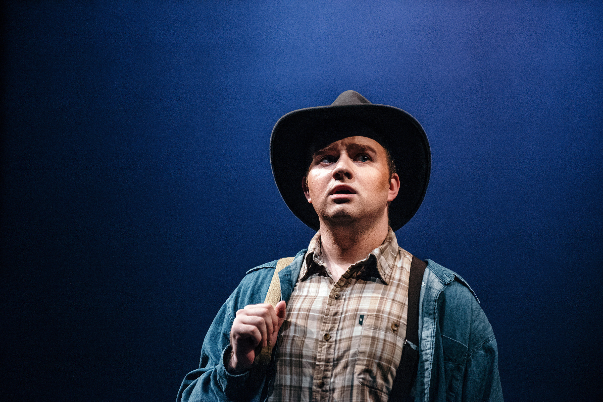
Seattle Opera Summer Young Artist Academy — Copland, The Tender Land (Martin)
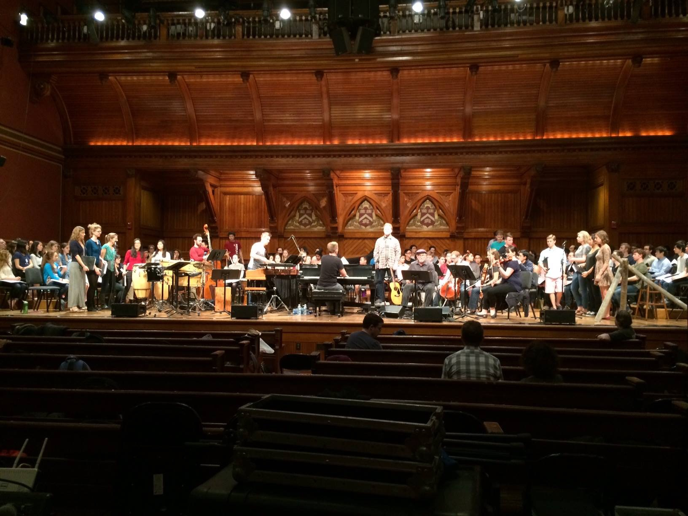
Harvard Choruses — Craig Hella Johnson, Considering Matthew Shepard (tenor soloist)
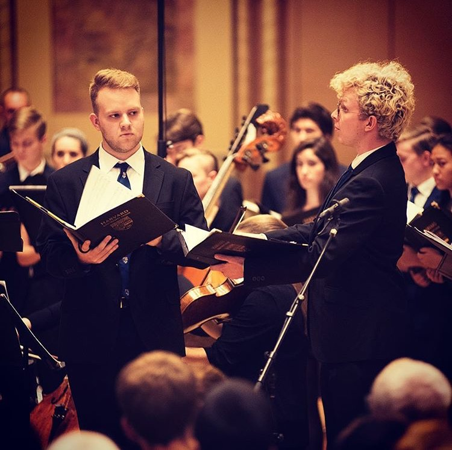
Harvard University Choir — Paulus, The Three Hermits (The Fisherman)
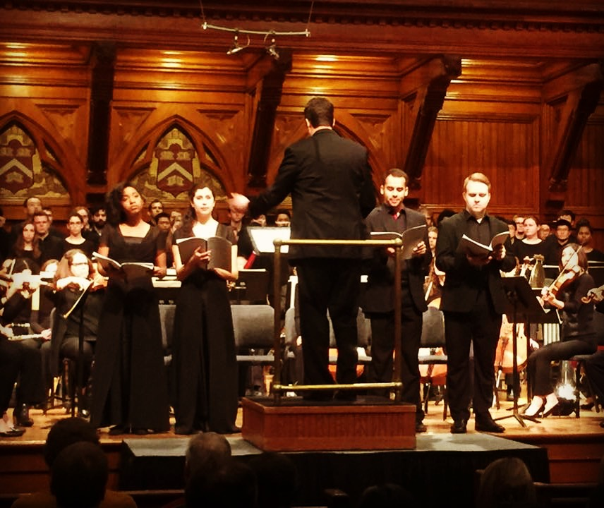
Harvard Choruses — Trevor Weston, Griot Legacies (tenor soloist)
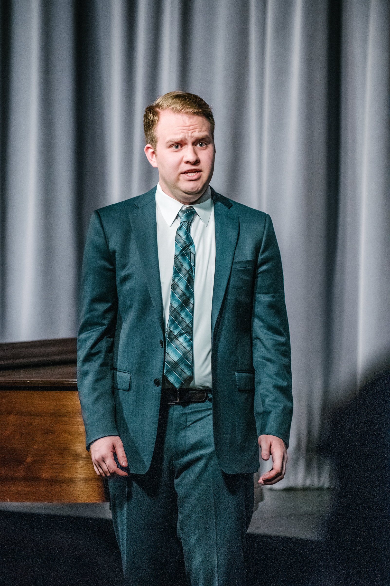
Masterclass with baritone Weston Hurt — Bellingham, WA
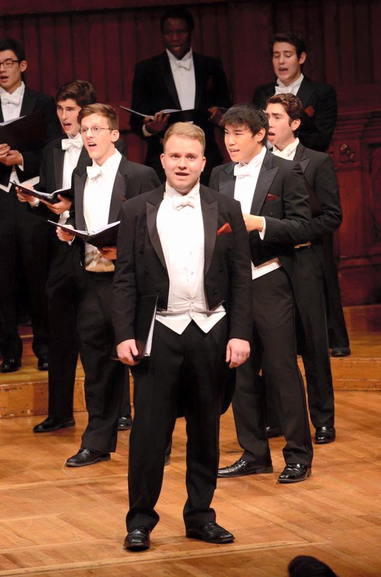
Harvard Glee Club — Sanders Theatre
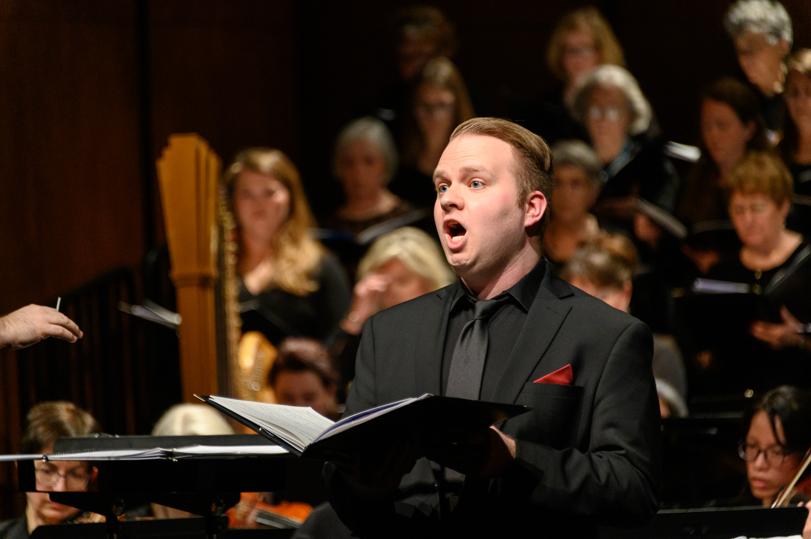
Vashon Island Chorale (tenor soloist)
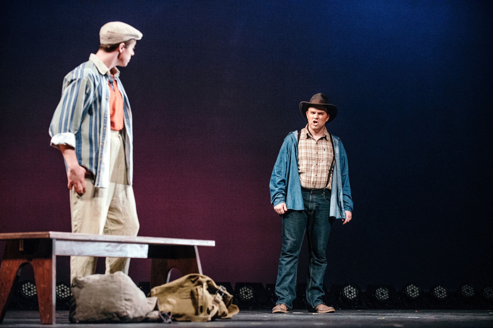
Seattle Opera Summer Young Artist Academy — Copland, The Tender Land (Martin)
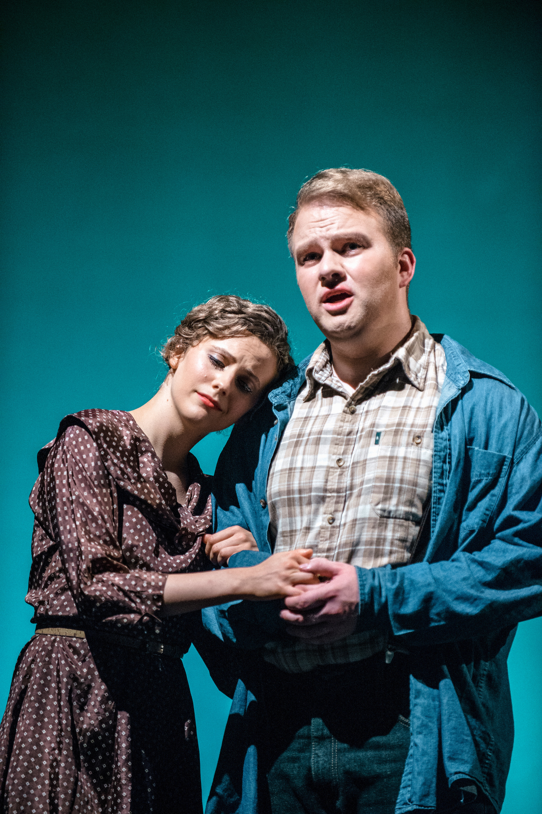
Seattle Opera Summer Young Artist Academy — Copland, The Tender Land (Martin)
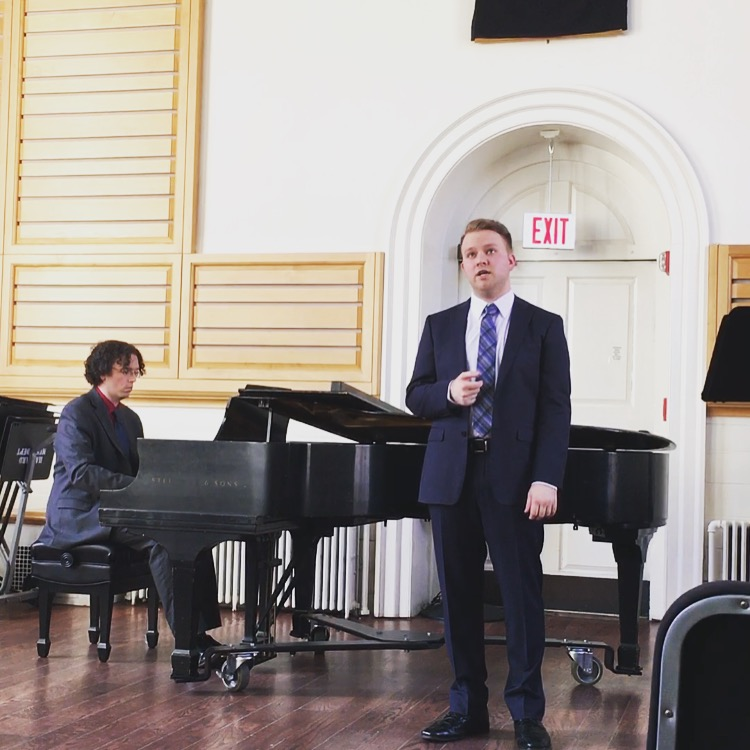
Senior Voice Recital — Holden Chapel, Harvard University
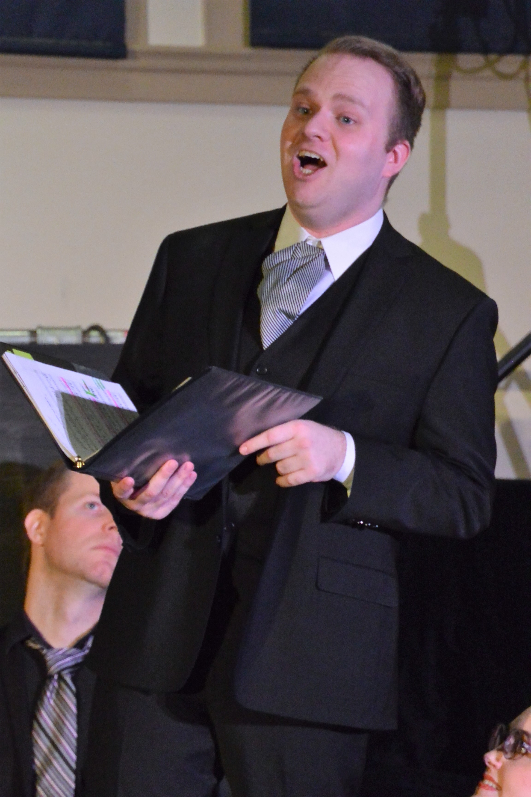
Seattle Gilbert and Sullivan Society — Trial by Jury (The Defendant)